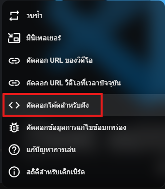
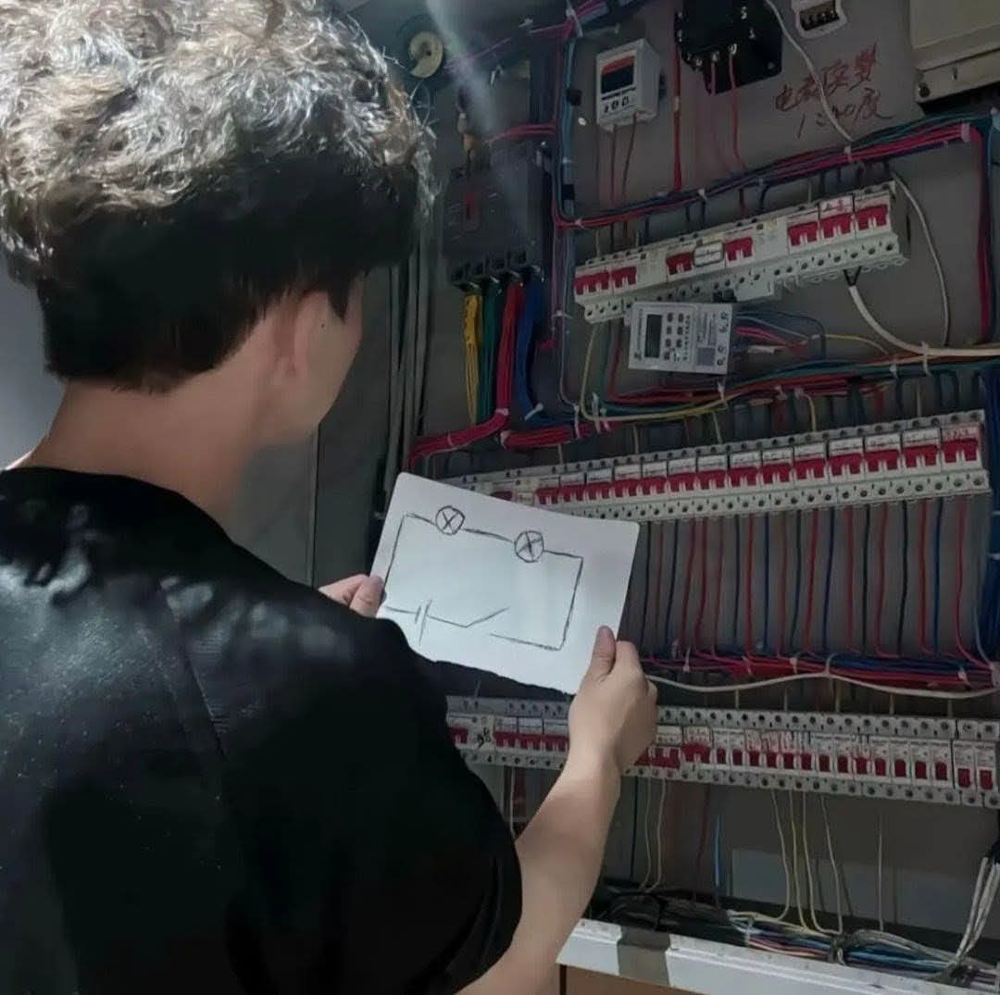

สวัสดีครับผม นายณัฐชนน จันทร์แพทย์รักษ์
รหัสนักศึกษา 6909650209
ชอบอ่านManhwa
ผมได้สร้างเว็บไซต์แบบหน้าเดียว เกี่ยวกับการพัฒนาเว็บไซต์เบื้องต้น โดยใช้ HTML และ CSS โดยมีการใช้ส่วนประกอบดังนี้
Client และ Server: มีClientเกิดขึ้นแล้วแต่ไม่มีServerเกิดขึ้น เพราะเบราว์เซอร์จะทำหน้าที่เปิดไฟล์ขึ้นมาอ่านโค้ดและแสดงผลทันทีโดยข้ามกระบวนการส่ง Request/Response ผ่าน HTTP ไป
ผมใช้แอพ VS code เพื่อเขียนโค้ด Html และ Css โดยมีการใช้ Extension หลักๆตามนี้
ขั้นตอนการพัฒนางานนี้มีดังนี้
คลิปวิดิโอจากช่องที่ผมใช้ศึกษา(และชอบดู)แนะนำมากๆ
ส่วนวิธีการembed videoได้มาจากyoutubeตามรูปด้านล่าง(มีประโยชน์มากๆ)

ps.I love coding
